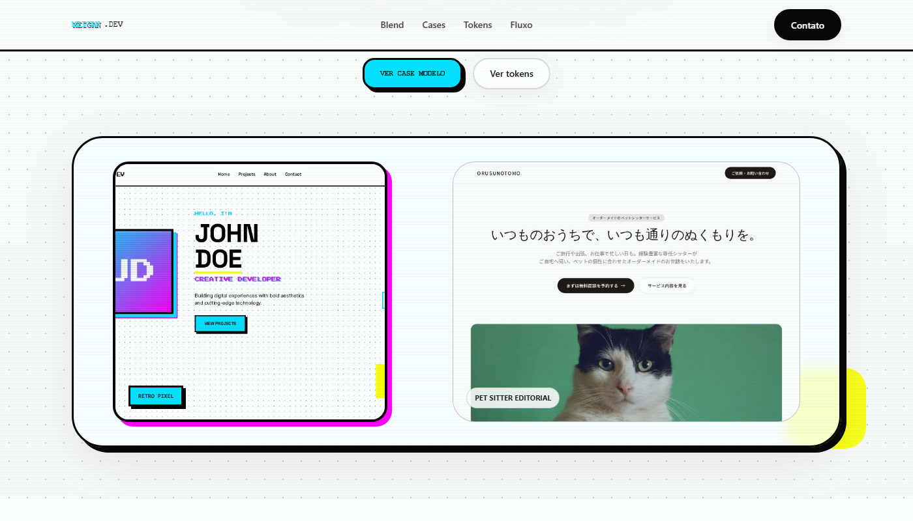
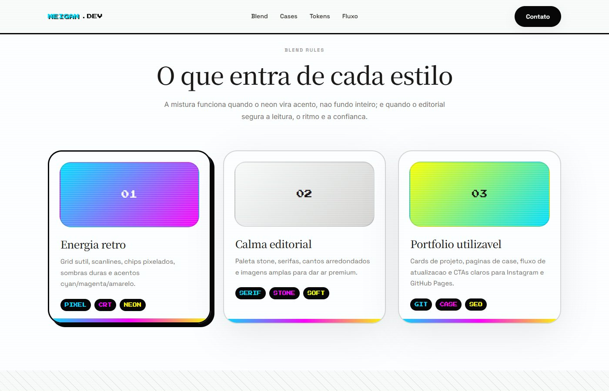
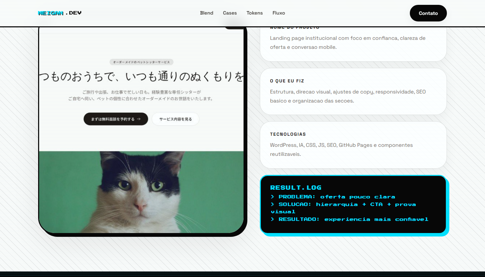
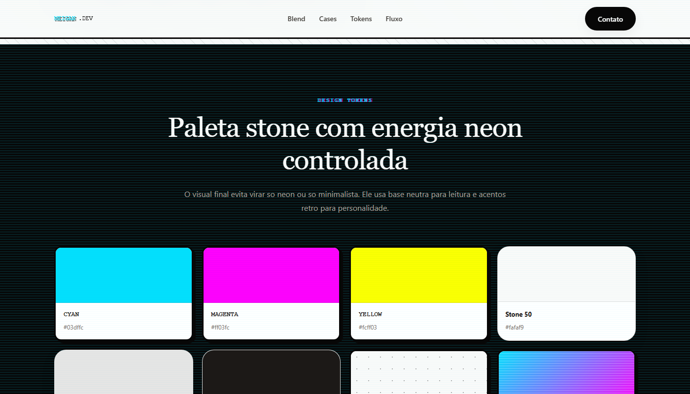
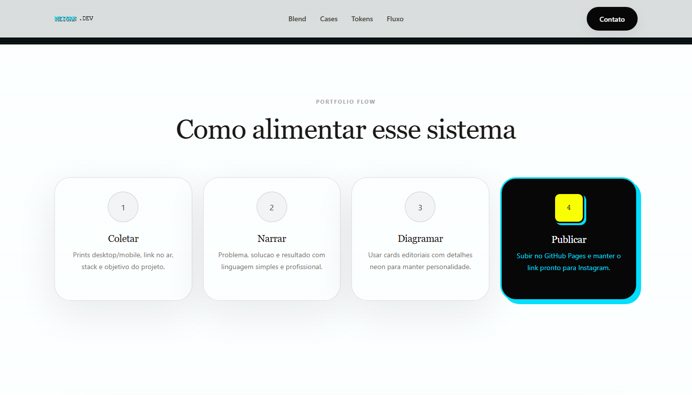

Primeira dobra
01
Serifas amplas recebem pequenos acentos de arcade.
A mensagem principal mantém a calma editorial, enquanto tipografia pixel e cores pontuais sinalizam a segunda influência.
Um design system que usa a estrutura calma do editorial para contar os cases e reserva a energia do arcade para acentos, chips pixelados, textura e ações memoráveis.

A paleta stone, as serifas e os cartões de borda suave dão espaço à narrativa. Ciano, magenta e amarelo aparecem em pontos de atenção, junto de etiquetas pixel, grade pontilhada e sombras duras. A demo compara as duas referências, define as regras da mistura e as aplica em um case-modelo, na biblioteca de cores e texturas e no fluxo de publicação.
Depois da comparação visual na capa, os cards mostram as regras da mistura, o resultado no case-modelo, a paleta e o fluxo de publicação.
A mensagem principal mantém a calma editorial, enquanto tipografia pixel e cores pontuais sinalizam a segunda influência.

Energia retrô, calma editorial e portfólio utilizável aparecem como camadas distintas. O grid, os chips e o neon destacam; a paleta stone e as serifas sustentam a leitura.

No exemplo da demo, o painel RESULT.LOG resume problema, solução e resultado. A linguagem de terminal acrescenta personalidade, mas continua subordinada à história do projeto.

Ciano, magenta e amarelo entram como sinais de destaque. O stone, o preto e as superfícies claras preservam contraste e legibilidade na interface inteira.

Coletar, narrar, diagramar e publicar formam um roteiro repetível. Nos cartões do fluxo, o último passo recebe o destaque neon enquanto os anteriores permanecem serenos.
A demo combina tokens das duas propostas anteriores. O contraste entre superfícies serenas e acentos luminosos é parte da regra visual.
Stone sustenta leitura, imagem e conteúdo. Os três tons de arcade sinalizam pontos de interesse, não substituem a base da página.
#fafaf9#e7e5e4#1c1917#070707#03dffc#ff03fc#fcff0328px sutilNoto Serif JP conduz a narrativa; Space Grotesk organiza a interface; Press Start 2P aparece em marcadores curtos.
Press Start 2P · detalhe
Editorial com um pulso arcade.
Space Grotesk · texto funcional e claro para costurar casos, serviços e chamadas da interface.
Reunir a leitura confortável do editorial com a personalidade do arcade sem perder uma hierarquia reconhecível.
Definir uma base stone, distribuir funções tipográficas e limitar neon, chips e sombras duras aos pontos de atenção.
Uma demo navegável com referências comparadas, regras de mistura, case-modelo, biblioteca de cores e texturas e fluxo de publicação de novos trabalhos.
Compare as propostas de origem ou abra a demonstração completa do estudo híbrido.